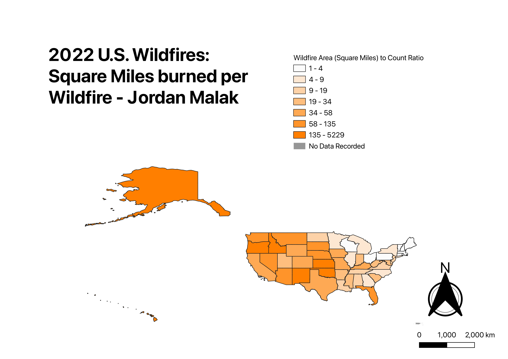

Homework 7

Being from central Texas, I would often have to deal with my share of wildfires. It is common for wildfires, in Texas at least, to differ in size and impact. For the ratio choropleth in this assignment, I analyzed both total square miles burned per state and compared those numbers to the number of recorded wildfires by state. This was done by seven classifications of equal interval counts, as the ratios had high deviation from a standard mean value. The ratio, depicted by the map, is not that surprising. Wildfires with the highest burned area show a trend in the western, more rural states.
GitHub Clean CSV
Wildfire Count CSV Source
Acres Burned CSV Source
GitHub Vector